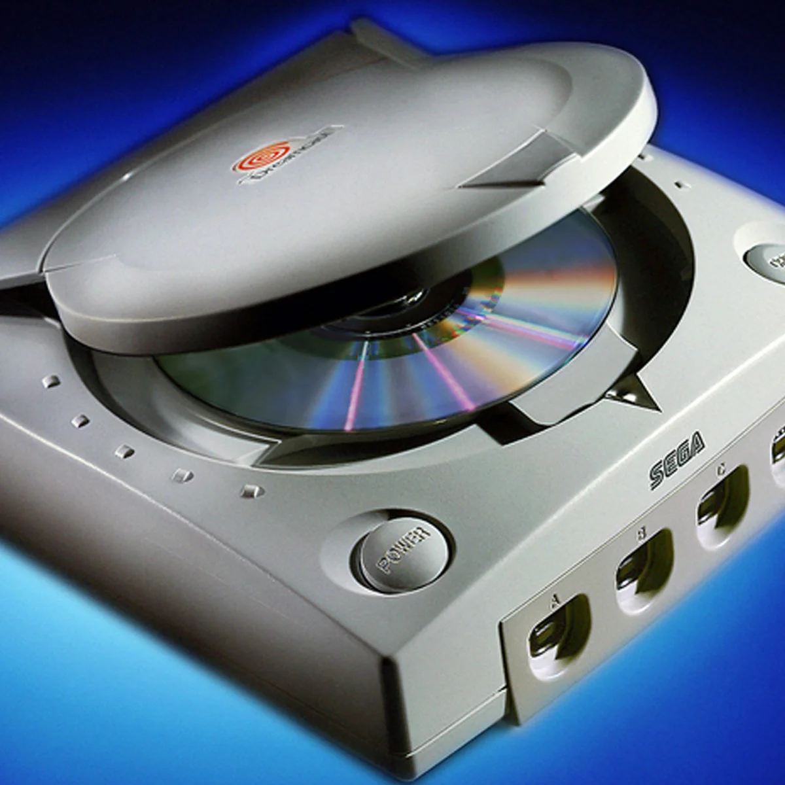

Released in 1998, the SEGA Dreamcast was the first sixth-generation console. It was far ahead of its time, coming built-in with a 56 kbps modem for online gaming long before Xbox Live or PlayStation Network existed.
Another ingenious innovation was the VMU (Visual Memory Unit) memory card. It wasn't just a storage module, but a mini-gadget with its own monochrome screen and buttons that slotted directly into the gamepad to show health status or secret information.
Despite masterpiece titles like Shenmue, Sonic Adventure, and Crazy Taxi, the console could not sustain competition against the incoming PlayStation 2 and rampant piracy. The Dreamcast became SEGA's final home console, leading to the company's departure from hardware manufacturing.
<-- Return to Main Page